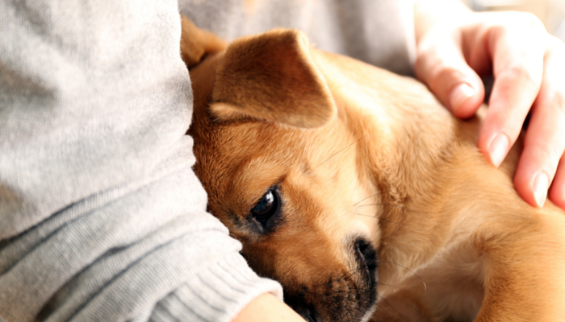
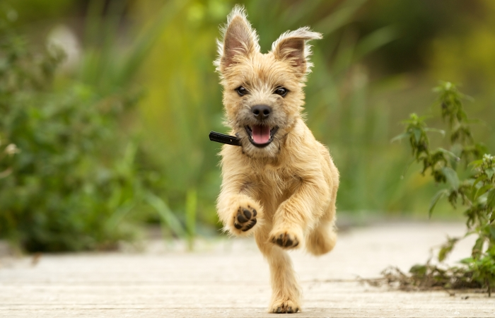
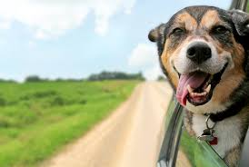

Hey, y'all Dog lovers. It's absolutely so pleasing to see you here. Dogs have been such an amazing part of human life and perhaps one of humans's best companions ever since. Loyal and ever-ready to protect you, play with you and give you that amiable affection and warmth when you need it. So let us explore a little and loom into what's inside of some of their weird behaviors.

Does your dog like to cuddle? My dog certainly does, and she’s quite happy with being a 70 pound lap dog. But not all of my previous dogs were big on cuddling. The biggest clue as to why dogs enjoy cuddling comes from the definition itself: “to cuddle is to hold close for warmth or comfort or in affection.”
If you’ve ever seen a puppy pile you know how adorable it is. But aside from being the cutest thing ever it makes sense from an evolutionary standpoint. Puppies snuggle with one another to keep warm. But, Dogs have their own unique personalities, and not all of them are super cuddly or affectionate. Dogs are just like people in that way; some people love hugs, and other are a little more standoffish.

If you’ve ever bathed a dog chances are you’ve seen the zoomies. It’s that frantic, running around the house at full speed craziness that happens when dogs get out of the bath.
Zoomies are a sudden release of energy in dogs. It’s a common behavior (especially in young dogs), and it’s simply a way for dogs to release pent up energy. Any dog can get the zoomies, but they’re most commonly seen after a bath, during play, and late at night.
While these outbursts are common they might indicate that you dog isn’t getting enough exercise.
If your dog gets the zoomies often try giving them some more mental & physical exercise. Just adding a few quick mentally stimulating games to their daily routine can have a huge impact. For my dog, a 5 minute nose work game such as ‘find the treats’ is just as tiring as a 30 minute walk.
Have you ever looked at your dog as he’s running around like a mad man and wondered what the heck is going on? So now you know at why dogs get the zoomies.

When was the last time you saw a dog with his head out the car window looking sad? Unless it was a St. Bernard chances are probably never (they always look sort of sad, don’t they?). Why do dogs stick their heads out car windows, and why do they love it so much? For many dogs the opportunity to get out and experience some of that outside world, even from a car window, is pretty exciting.They love it even more when they gets to “speak” to another doggie outside.
Most of our dogs spend the majority of their time indoors, so when they get the chance to go out and see some so much of the outside world they can get pretty giddy.
What dog doesn’t respond to “wanna go for a ride?” Jumping in the car, regardless of destination, is a sensory overload for our canine companions.
I imagine for our dogs a ride in the car is just as exciting as when we go to a carnival. Being surrounded by all those sights, sounds, and smells can be quite stimulating, regardless of whether you go on any of those rides. The atmosphere itself is exciting and memorable.
"Things like a wider view of the passing scenery and increased accessibility to enticing scents outside the moving vehicle can be irresistible to an animal whose sense of smell is so much more sensitive than ours."- Vetstreet